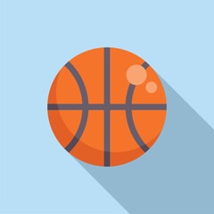

Basketball is more than just a game; it's a global culture that connects people everywhere. At Hoops United, we recognize the diverse world of basketball, and that’s why our platform doesn’t just cover one league or level. We celebrate basketball in all its forms—from the major professional leagues to high school, AAU, club teams, and even international play. This comprehensive approach is what sets us apart, allowing us to attract a wide range of users, from casual fans to serious analysts and everyone in between.
Our site is a one-stop shop for everything a fan might want. Visitors can access schedules, scores, and standings from their favorite leagues; they can also explore analysis pieces, highlights, and insider stories from the world of basketball. This community brings together all the information fans need in one place, so they no longer have to visit multiple websites to follow their favorite teams, players, and coaches. Hoops United is here to streamline the fan experience.

Hoops United goes beyond traditional sports coverage by fostering connections. Our forum gives fans the space to talk, share insights, and celebrate their favorite moments. We’re here to support conversations that bring fans closer to each other and the game they love. Companies also find value here by gaining a unique platform to showcase products, services, and events to a highly engaged, basketball-centered audience. From tickets to fan gear and sports programs, our platform offers companies and brands the exposure they need while keeping our fan community informed about relevant events and products.